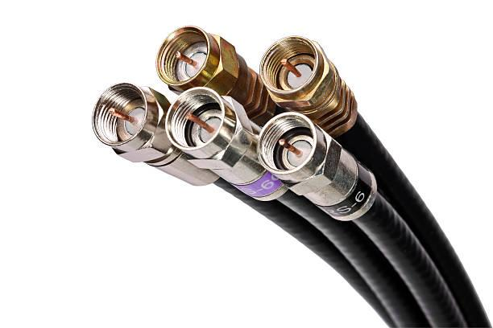
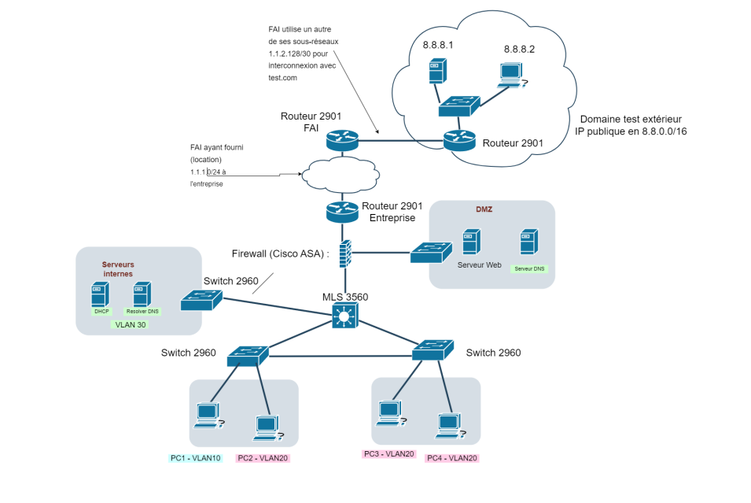

Télécharger mon CV
Accueil
Profil
Projets
Compétences
Mes Projets
Hygiène info et à la cybersécurité
S'initier aux réseaux informatiques

Découverte d’un dispositif de transmission
E-Réputation

Réseau d'entreprise
Site Web
×